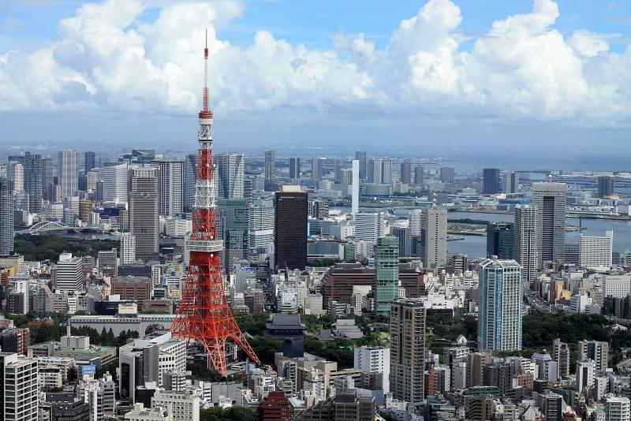
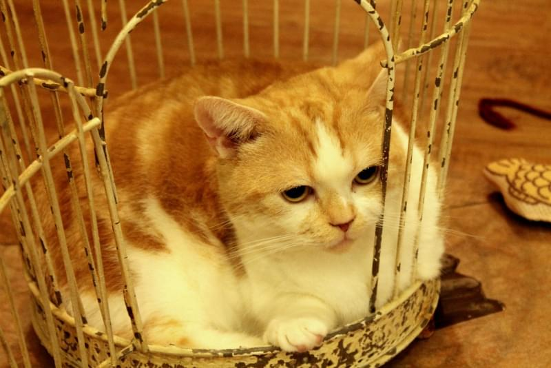
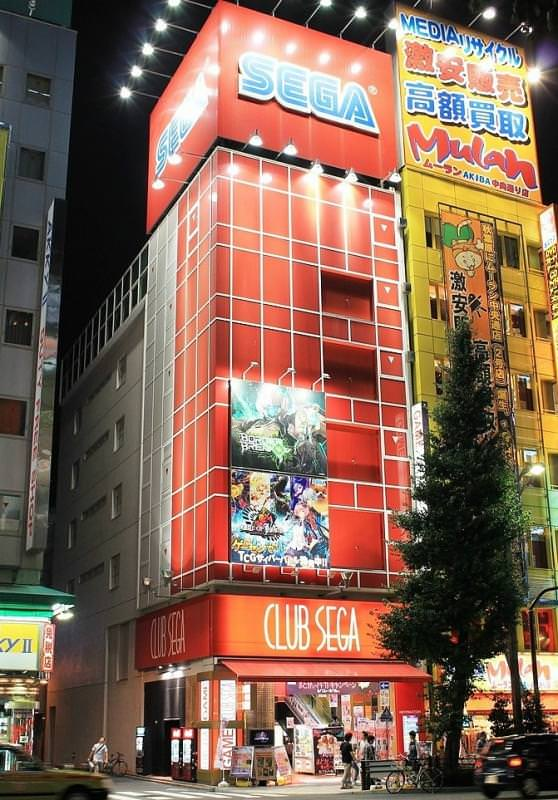
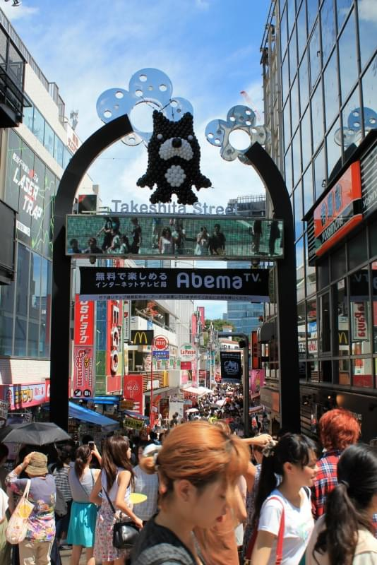

|
|  | Tokyo, capitale del Giappone, con i suoi 13 milioni abitanti si conferma la metalopoli più popolata dell'intero Paese ed è una delle principali città del mondo.La sua storia ha origini antiche che risalgono al lontano 1603, quando Tokugawa Leyasu instaurò il governo feudale(shogunato) da cui ebbe un prospero sviluppo. Al tempo,Tokyo veniva chiamata Edo. Centro culturale, politici ed economico del Giappone, la città è costituita da 23 distretti che comprendono 26 città, 5 cittadine e 8 comuni. |
|  |
Il Neko Cafè è una caffetteria tematica, in cui attrattiva principale sono i gatti.
In questo locale metre si consuma il proprio caffè, bevanda o un piccolo pasto, è possibile giocare e osservare i gatti ospitati all'interno.A Tokyo sono diffusissimi, e non c'è modo miglore di trascorrere un pigro pomeriggio di pioggia che coccolare i nostri amici felini in un ambiente tranquillo, studiato appositamente per loro, con luci e toni soft, e dove poter sorseggiare in tutta calma qualcosa da bere: l'ideale per rilassarsi un po' durante i frenetici giri cittadini. In questi locali di solito, oltre alla normale consumazione, spesso è chiesto un prezzo di ingresso, in media si arriva a spendere sui 1,500-2,00 Yen. 
|
Gli amanti dell'elettronica, dei Manga, degli アニメ
non possono decisamente
| mancare una visita al quartiere di Akihabara, regno dell'elettronica e del mondo Otaku.Nel Electic Town potrete trovare di tutto, immancabile una vista a Yodobashi Akiba, negozio di elettronica immenso. Questo è anche il quartiere delle sale da giochi, nonché dei famosi Maid Cafè, le caffetteriein cui sarete serviti dalle Maid, ragazze con una divisa particolare di foggia vittoriana o francese, decorata con pizzi, che si occupano anche di intrattenere i clienti con i giochi e canzoncine, tutto in pieni stile kawaii. 
|
Durata un soggiono anche breve a Tokyo, non può mancare una tappa nella follia
| di Takeshita Street, stradina pedolare proprio di fronte l'uscita della stazione di Harajuku: è la strada della moda altenativa, dei giovani e del kawaii, dove vi ritroverete sommersi da gente incredibile e con tantissimi negozietti dove fare shopping: da non perdere le dolcissime crepes di Marion Crepes, ed è obblio una tappa da Daiso, un negozio di 5 piani dove tutto a 100 Yen. |
にっぽん の かんこ